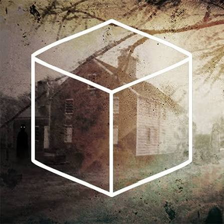

“Discover the gateway to Rusty Lake.”
Cube Escape: Case 23 é o quinto episódio da série Cube Escape e um dos capítulos mais importantes para a narrativa do universo de Rusty Lake. Lançado em 2016, o jogo acompanha o detetive Dale Vandermeer enquanto ele investiga o assassinato de uma mulher. O caso começa em um misterioso quarto onde o corpo da vítima é encontrado. Para descobrir o que aconteceu, Dale precisa analisar o local, examinar objetos, encontrar pistas e solucionar diversos enigmas. A investigação leva o jogador por diferentes locais e acontecimentos, conectando elementos do caso com os estranhos mistérios que cercam Rusty Lake.
Dale Vandermeer é chamado para investigar a morte misteriosa de uma mulher. O corpo é encontrado em um quarto e, à primeira vista, o local parece ser apenas uma cena de crime. Porém, conforme Dale começa a investigar, ele encontra pistas que não parecem fazer sentido dentro de uma investigação comum. Fotografias, objetos, símbolos e acontecimentos estranhos começam a conectar o assassinato com o misterioso universo de Rusty Lake. A investigação conduz Dale por diferentes lugares e situações, fazendo com que ele se aproxime cada vez mais de uma verdade perturbadora. No decorrer do caso, o passado e os mistérios de Rusty Lake começam a se misturar com a investigação de Dale.
Case 23 é dividido em quatro capítulos.
CAPÍTULO 1 — A CENA DO CRIME A investigação começa no quarto onde a
vítima foi encontrada. Dale precisa examinar o local e procurar pistas que possam explicar como a mulher morreu.
CAPÍTULO 2 — O INVESTIGADOR Conforme a investigação avança, Dale começa a conectar diferentes evidências
encontradas durante o caso. Os enigmas passam a exigir uma observação mais cuidadosa dos objetos e das
informações encontradas.
CAPÍTULO 3 — A IGREJA A investigação leva Dale a um novo ambiente e apresenta elementos
ainda mais estranhos relacionados ao universo de Rusty Lake.
CAPÍTULO 4 — O LAGO O último capítulo amplia ainda
mais a conexão entre o caso investigado por Dale e os mistérios de Rusty Lake. O lago, que possui grande
importância para a franquia, volta a aparecer como parte central dos acontecimentos.